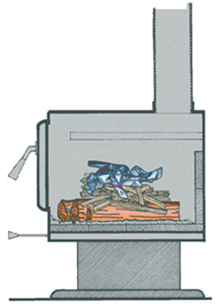
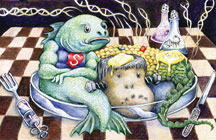

Dear Mother: February-March 2009
Letters from our readers on population, tips for starting a fire, genetic engineering and more.
Letters from our readers
February/March 2009
Do the Right Thing
I’m so glad that you’re brave enough to take a stand for population control; not many organizations have that kind of courage and vision nowadays. No matter how carefully we live, people take up space and use resources. In Dear Mother, Kathleen Plumb complained that population control “caters to the selfish.” Back in the early ’70s, when it became clear that runaway population would lead to famines and environmental destruction, my husband and I decided to have but one child. For us, this was not selfish, but a sacrifice; and we’re still convinced that we did the right thing.
Mary Pratt
New Haven, Vermont
A Broken Planet
Kathleen Plumb’s comment that population “should not be a target in protecting our planet” was disheartening, to say the least. She offers no reasoning for her stance, just a little weak rhetoric about how reducing the population is “selfish” and about how the world was put here for mankind.
To Ms. Plumb and those who would espouse her beliefs, I must ask: How do you think the Creator feels about how we treat the great gift which is this world? I bet it is something like a parent who has given a child a remarkable gift, only to discover the child has carelessly broken it.
Cliff Seruntine
Antigonish, Nova Scotia
Time to Evolve
When I read Ms. Plumb’s uneasiness regarding a solution to our problems with human demographics, I must admit I jumped in my seat! Especially when I read her statement that “Our resources were put here for mankind.” I thought for a second I was reading something out of a 16th-century book.
This may offend some more religious readers, but it’s time humans evolved (another dreaded word for some) from a narrow religious belief to a more modern open-mindedness, in which each human is important and each human is mindful of the other living creatures that share the Earth!
Pearl Duval
Montreal, Quebec
We Won’t Conserve
You make some interesting points in Three Mountains We Must Climb. However, you exhibit a naive viewpoint as well as a lack of general knowledge concerning history and social/political science, as well as basic human behavior.
These ideas have never worked, nor will they. Conservation will never be widely accepted or effective. It hasn’t been cost effective in the marketplace, and until it is, people will not conserve.
Mark Meler
Newcastle, Oklahoma
Facing Earth’s Carrying Capacity
Kathleen Plumb argued that increases in population aren’t a major cause of environmental destruction. I suggest that she check the dictionary for the term “carrying capacity.” Better yet, ask a farmer. Once a country exceeds its carrying capacity, it can either decrease births or accept increased deaths from war, famine or disease. If any society cannot accept sensible population control - due to religious, cultural or nationalistic reasons - let God sort it out the old-fashioned way.
George Burnett
Spartanburg, South Carolina
I Quit
Wow … population control is so dehumanizing. I can’t decide which of my children should never have been born. Each person born is full of so much potential for contributing to a healthy society. I wonder why limiting that potential is a solution you would want to promote? Too far out there. I choose to forego renewing my subscription.
Beth Aiken
Wasilla, Alaska
The Elephant is Stirring
Congratulations to Mother Earth News for finally recognizing the elephant in our front room: global overpopulation!
The current world population is about 6.7 billion and it stands to grow to more than 9 billion by 2040, with no end in sight. Most of this increase will occur in poor nations, many already operating at subsistence levels.
Anyone truly caring about the weak will readily see that we must formulate a world population policy, and do it soon. The elephant is stirring.
Howard Pellett
Anacortes, Washington
Buy, Buy, Buy
Regarding Three Mountains We Must Climb, I agree that it’s essential that we stabilize the population. The only chance we have at all to reduce global warming (if it’s not too late) is to reduce the number of people contributing to it, which would entail a restructuring of our entire economic system. Our current economy requires consumers to buy, consume, and buy more stuff that eventually ends up in landfills or on top of some huge pile waiting to be recycled. Even with today’s economic malaise, our leaders are encouraging us to shop rather than save, for the sake of “the economy.”
Chris Anderson
Seattle, Washington
How Dare You!
I just read Three Mountains We Must Climb and am aghast and disgusted at the author’s recommendation of population control as the second mountain to climb to achieve a sustainable future. Are you kidding? Are you suggesting mandatory sterilization or birth control? How dare you imply such an insensitive, inhuman, ridiculous idea. I believe in a higher power, in the sanctity of human life, and in the Earth’s ability to provide. I realize changes need to occur, but big families are not to blame. It’s not the number, but how those kids are raised to be or not to be good stewards of the Earth.
Jeanne Taylor
Dallas, Georgia
I Was Appalled
I absolutely love your magazine. Every issue has answers to something I always wanted to know. I’m very concerned with the health of our planet, and appreciate your insightful ideas on how to live a more sustainable life. I was appalled by Kathleen Plumb’s letter regarding population control. I hope human beings that are so self-centered as to think that our resources were put here for mankind are the exception. The Earth cannot support unlimited amounts of people.
Kerstin Beerweiler
Leavenworth, Washington
Overpopulation Not a Problem
I have really enjoyed the great blend of gardening, sustainable energy and healthy living articles that Mother Earth News offers. But the population focus in Three Mountains We Must Climb makes me question what my subscription money is really supporting. The concept that the Earth is overpopulated is a myth, unsupported by much of the current population data. The demands on the Earth’s resources and harm to its ecosystems are the result of many things, including greed and the misuse of many of our natural resources, not overpopulation.
Lara Dillard
Berryville, Virginia
More is Better
I agree with Three Mountains We Must Climb, except for the part on shrinking our population. My husband and I have five children. Our philosophy is that when irresponsible people can have several children, the people who are concerned about our future usually have fewer or no children because of these concerns. Soon, the majority of our population will consist of materialistic, irresponsible, misbehaved, selfish and spoiled people, and the people who were raised with morals and values that support conservation, sharing, caring and responsibility will be a small minority. We felt we needed to counteract this by having a lot of children ourselves.
Nienke Adamse
Bingham, Maine
So Long
Just thought you should know that you have lost another longtime subscriber. Your editorial on population control is way over the top. You apparently have lost your grip on reality. Signed, Gone forever.
Evan Thacker
Olalla, Washington
Don’t be Intimidated
It is so very obvious that overpopulation is a big problem. Please, we need more articles on the subject. Unlike animals, humans have the intelligence to control their own breeding (or most of us do).
So, when you get one “foe” because of your articles about population, please know that you will be gaining many more friends. I will certainly be renewing my subscription, and will encourage my friends to subscribe, too. Keep up the good work, and do not get intimidated by unrealistic, uninformed opinions.
Tove Boriths
Huntsville, Texas
Reupholstering for Dummies
I have been waiting so long to find an article like How to Reupholster Furniture, from your online Archive. I started redoing my grandmother’s old rocking chair and got so frustrated I just gave up. But after reading these wonderful instructions I have the courage to continue. Thank you for taking the time to list every little detail for upholstery dummies like me.
Kathy Davis
Hull, Georgia
Greener Cars, Then and Now
You are doing a great job; keep up the good work. And thanks for sponsoring Jack McCornack’s MAX entry into the Auto X Prize competition. It is efforts like this that will bring change into the automotive marketplace, not government, nor Detroit.
And speaking of Detroit, General Motor’s electric car, the “Volt,” uses the same concept that David Arthurs used for his An Amazing 75-mpg Hybrid Electric Car, that you featured back in 1979 - and that you still offer plans for (I purchased a set).
I think GM owes you and David at least some sort of acknowledgement.
Ken Koenig
Garrett, Indiana
You can find the plans and articles about Arthurs’ car here. Also check out Here Comes the 100-mpg Car, the first article about MAX, as well as the MAX Updates in the Energy Matters blog. - Mother
From the Fringe to the Mainstream
I took great personal offense to Bill Tucker’s letter (Dear Mother) referring to flower children of the ’70s as finger pointers and mavericks who have become what they opposed. I think the word “crap” was thrown in there, too. He admitted to being in a long dark tunnel. Well, it’s time he came out and noticed that America has finally (40 years later) caught up with the ideals that we embraced.
Organics, alternative energy, healthy and authentic lifestyles are all topics in any magazine, newspaper or television talk show. In the late ’60s we held a minority perspective that has now become a global vision. We were teased and often discriminated against by people like Bill, and I imagine his contempt is making a lot of long-time Mother Earth News readers shudder from his bigotry.
Sam Marshall
Eugene, Oregon
New Credit for Wind Turbines
Last fall, Congress passed a new federal tax credit to help consumers purchase small wind turbines. For turbines used for homes, the credit is limited to the lesser of $4,000 or 30 percent per kW capacity. The credit will be available for equipment installed through 2016.
Laura Gribbin
Delanson, New York
Read more about these tax credits in Save Money and Energy with New Tax Credits.
A More Critter-friendly Solution
I have a big problem with the advice given in the Country Lore on how to deter varmints around the bird feeder. Who in their right mind would poison these animals with axle grease? If you would like to deter varmints from your bird feeder, I highly suggest using blackberry brambles, and lots of them. You can also use lots and lots of rose bush trimmings.
James Carrell
Elkhart, Indiana
We are Hunters/Gatherers
Thank you so much for publishing What Really Makes Us Fat. I’ve been in the health food industry for years, and it saddens me every time I hear sickly people say things like “We eat very healthy. We hardly ever eat meat.” What a terrible way to think! Grass-fed or pastured, hormone- and chemical-free meat is hands down one of the healthiest foods on the entire planet (next to wild game). Check out the omega-3 and -6 ratios and the wide range of nutrients provided in naturally raised animals. It’s incredible.
It seems that most people ignore the “hunter” in “hunter/gatherer,” when in fact, our ancestors evolved getting a major portion of their nutrients from meat. Look at the fossil record, kill sites, patterns on teeth and mineral content in bones. We were designed to eat large amounts of animal protein, some vegetables, and occasionally fruits and nuts.
This way of eating has literally saved my life and those of many I’ve known - when doctors blamed our problems on genetics or disease, sentencing us to pharmaceuticals and surgeries. My only note is to emphasize that the source of your meat is incredibly important. The fat content and nutrient profile of conventional meat is not at all healthy. Seek out a local farmer who provides a product raised the way Mother Nature intended, and you will absolutely be amazed by what happens when you feed your body what truly is “natural” for you.
Christy Reboul
Picayune, Mississippi
A Better Way to Start Fires
New Trick for Old-timer
Many thanks to John Gulland for sharing wood heating advice that works (Expert Advice for Wood Heating). John, you gave us information that we hadn’t heard from any stove seller, stove manual or even my parents. Your “top down” method for starting fires has been a paradigm shifter and a source of great satisfaction. It was fun to teach my dad something new in his 69th year.
We want to share your article with everyone we know who burns wood for heat and pleasure. Heck, I think the stove manufacturers should include your tips with every sale, so the customers will be happier with their new stoves and avoid “the school of hard knocks” phase that everyone seems to go through. I quoted you to my mother to make my case against the “load it up for the night and close down the intake” method when I saw heavy creosote deposits on her chimney cap.
Kevin Bedard
Pine, Colorado
Beautiful Fire
I read with great interest John Gulland’s Expert Advice for Wood Heating, and was particularly intrigued by his suggested method of “top down” lighting of a fire. I’d never heard of it and decided to give it a try right away. At a glance, the method appears to be counterintuitive - and I did have some doubts - but it worked on the first try. It was indeed a thing of beauty to watch the fire slowly and cleanly burn its way down from top to bottom, with nary a wisp of smoke.
Leonard Ablieter
Fall Creek, Oregon
Less Smoke, More Fun
I wanted to thank you for running the article on burning wood for heat. I took the author’s advice on orienting the logs in our woodstove and using tied-knot newspaper to reduce smoke. Before, we’d always struggle with keeping the fire going, or deal with a smoke-filled house. I can’t believe how well Gulland’s fire-starting methods work! The smoke from the woodstove, both inside and outside our house, has been significantly reduced. These methods have made burning wood as a primary heat source much more enjoyable for our family.
Laura Hill Bermingham
Huntington, Vermont
An Easy, Terrific Artisan Bread
Anyone can do It!
I just wanted to let you know that I tried the procedure for making bread found in your last issue (5 Minutes a Day for Fresh-baked Bread), and it turned out great! I’ve never tried making homemade bread before; my wife has always been the baker in the house, while I focused on the cooking.
Lately we’ve not had the time to enjoy a loaf of fresh-baked bread - until now. I followed the steps, watched it rise (dramatically, I might add), approached the “shaping” process timidly, afraid I would “break” it somehow, and then threw it in the oven - in a word, easy! The taste and texture were just right, and I’m looking forward to experimenting with some different “flavor” combinations.
If I can do it, anyone can! I strongly recommend your readers take the plunge and give it a try. They won’t regret it. Next step: homemade cheese for homemade pizza!
Robert Whyne
Sunbury, Pennsylvania
Amazing Artisan Bread
Thank you, thank you, thank you, for the amazing artisan bread recipe. I tried it as soon as we received the magazine. Instead of using a small amount of dough daily, I made three rounds and baked the whole batch. It was gone within a day (we have a family of seven).
For years, I have baked bread every day using a bread machine (we use 50 pounds of flour a month!). However, this recipe was just as easy as using a bread machine. The loaf tastes like one worked hours making it. I know I will be using this recipe a lot in my baking - I can’t wait to try the other recipes made from the boule dough.
Cherie Ellis
Condon, Montana
Seek out the Seed Savers Exchange
I’ve just been enjoying the articles in the October/November 2008 issue. William Woys Weaver’s article on Gourdseed Corn prompted me to write, as he listed only one seed source. As with other articles profiling rare or unusual plants, having so few commercial seed sources is understandable. That’s why I would like to suggest the nonprofit Seed Savers Exchange (SSE) as a source for any gardener interested in growing and preserving open-pollinated and heritage plants. When you become a member you have the opportunity to obtain, grow and share seeds and other plant materials from thousands of varieties maintained by more than 700 listed members.
The gourdseed corn piqued my interest, so I opened the 2008 SSE yearbook, which lists all of the members’ seed offerings, and sure enough found three listings for gourdseed corn from members in Virginia, Kentucky and Missouri. Anyone interested in learning more about the SSE can check out the Seed Savers Exchange Web site. Their phone number is 563-382-5990, and their address is 3094 North Winn Rd. Decorah, IA 52101.
Sally Carruth
Newport, New Hampshire
Thanks, Sally. Mother’s friend and contributing editor George DeVault was just chosen as the new head of the Seed Savers Exchange. And another tip for finding seed varieties: Search our custom search engine of more than 500 mail-order plant and seed companies (including SSE’s commercial offerings) on our Plant and Seed Finder. - Mother
Genetic Engineering: Scary, Criminal
Your article on genetically engineered foods (Engineering a False Hope) was quite alarming, but right on the button. What Monsanto and others are doing to our food supply without much, if any, oversight is nothing short of criminal. I would like to refer your readers to a book written by Claire Hope Cummings, Uncertain Peril. In it she describes in detail just what is being done to our seed crops, and the lack of oversight in these experiments. It really is quite scary.
David S. Vuicich
Virginia, Minnesota
Solar Artistry
About five years ago a friend brought me some old magazines to read in between making lattés at my espresso shop near the Little Bighorn Battlefield. One of them was the May/June 1980 issue of Mother Earth News. The Solar Etching article caught my attention because I am a portrait artist and I had a magnifying glass. I tried it and developed my technique over the years. This article changed my life! Thank you, Mother Earth News!
Jonathan Maxwell Beartusk
www.danceofthesungallery.com
Crow Indian Reservation, Montana
|
DMITRY NIKOLAEV/FOTOLIA “We must formulate a world population policy, and do it soon. The elephant is stirring.” - Howard Pellett; Anacortes, Washington |
 NATE SKOW Kevin Bedard was impressed with John Gulland’s fire-starting advice, tips he hadn’t heard from even from the manufacturer. |
MARK LUINENBURG Readers absolutely loved the easy and amazing artisan bread recipe in the December 2008/February 2009 issue. |
|
ROB CARDILLO Reader Sally Caruth pointed out that the Seed Savers Exchange is a great place to find heirloom seeds - and we agree! |
 DAVE CHANNON David Vuicich was alarmed at reading after reading about genetically engineered foods (“Engineering a False Hope,” October/November 2008), and suggested Claire Hope Cummings Uncertain Peril for further reading. |
 JONATHAN MAXWELL BEARTUSK Inspired by a 1980 Mother Earth News article, “Solar Etching,” Jonathan began a beautiful and successful career making portraits using the sun and a magnifying glass. |